전시 상품
BIP39 PLATE25
BIP39 PLATE25 (파트너 : BIP39) 사토시 마켓은 본 제품의 판매에 어떠한 대가도 받지 않습니다. 배송료 포함 가격입니다. ❓배송 등 문의사항 카톡링크 ( 고객센터 ) : https://open.kakao.com/o/sF3DbLCh
기록 보기Static Museum · 2026-05-17
한국에서도 비트코인 스탠다드를 경험하려 했던 작은 시장의 흔적을 정적 웹사이트로 보존합니다. 이곳의 상품, 페이지, 운영 기록은 판매가 아닌 관람을 위해 남겨졌습니다.
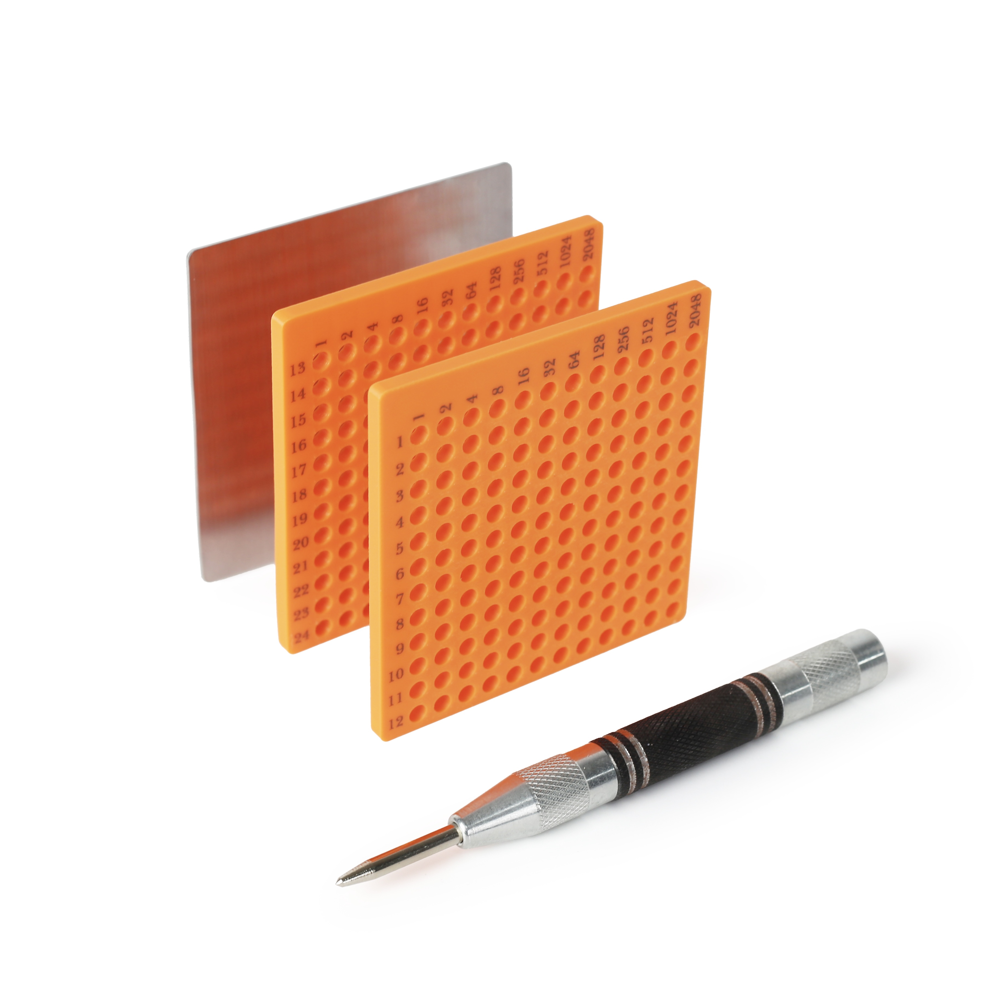
이 사이트는 결제, 장바구니, 회원가입, 주문 접수를 제공하지 않습니다. 원본 쇼핑몰의 내용은 역사적 기록으로만 전시됩니다.
Collection
전시 상품
BIP39 PLATE25 (파트너 : BIP39) 사토시 마켓은 본 제품의 판매에 어떠한 대가도 받지 않습니다. 배송료 포함 가격입니다. ❓배송 등 문의사항 카톡링크 ( 고객센터 ) : https://open.kakao.com/o/sF3DbLCh
기록 보기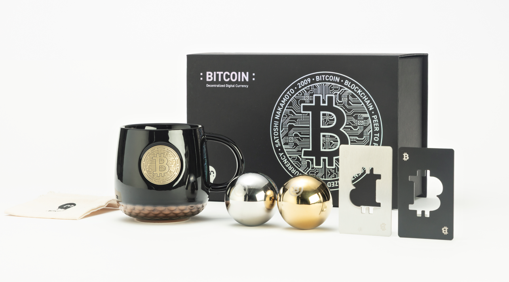
전시 상품
멜팅굿즈 비트코인머그컵 (링커 : 멜팅굿즈) 이것은 제품을 소개하는 목적의 링크 제품으로 실제 구매는 사토시마켓이 아닌 아래 판매자 웹사이트로 이동하여 진행하셔야 합니다. 판매자 웹사이트 방문하기 : https://m.smartstore.naver.com/meltingoods 사토시마켓
기록 보기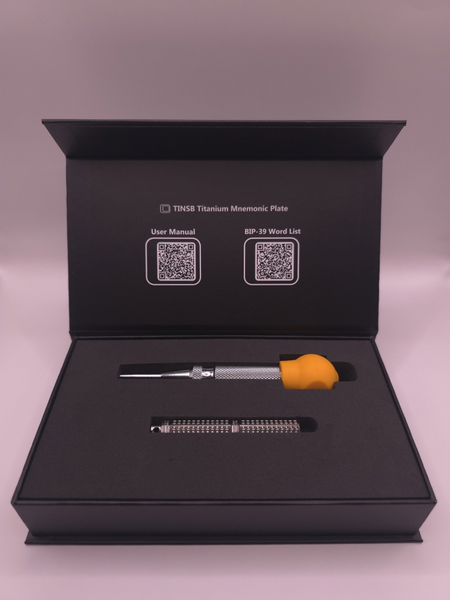
전시 상품
TINSB 티타늄 니모닉 헥사바(스탠다드팩) (링커 : 틴스비) 이것은 제품을 소개하는 목적의 링크 제품으로 실제 구매는 사토시마켓이 아닌 아래 판매자 웹사이트로 이동하여 진행 하셔야 합니다. 판매자 웹사이트 방문하기 : https://store.btcmap.kr/stores/TINSB
기록 보기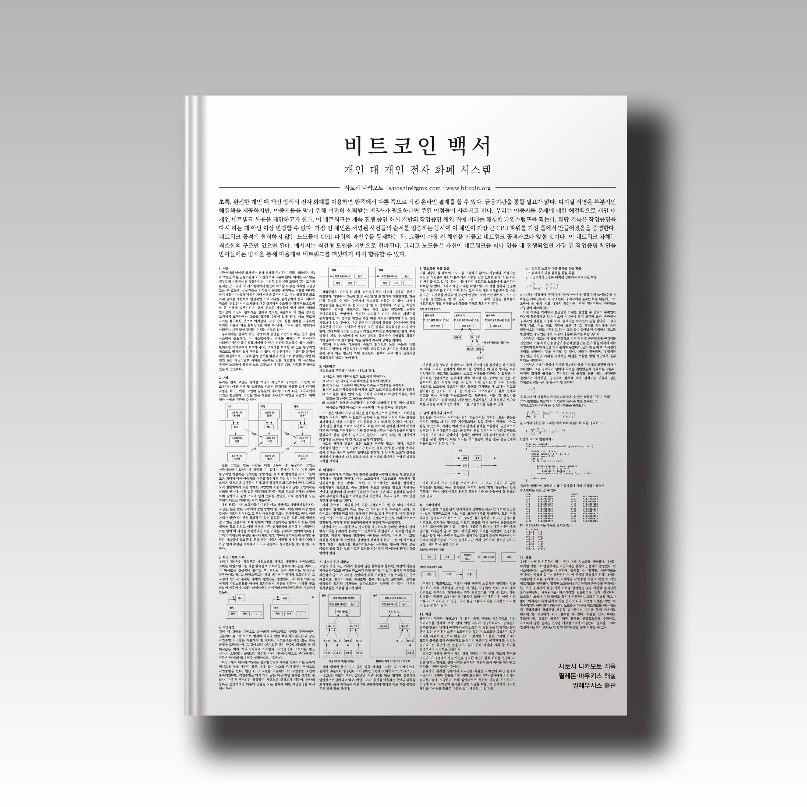
전시 상품
비트코인 백서 해설 (링커 : 필레몬/바우키스) 이것은 제품을 소개하는 목적의 링크 제품으로 실제 구매는 사토시마켓이 아닌 아래 판매자 웹사이트로 이동하여 진행 하셔야 합니다. 판매자 웹사이트 방문하기 : https://store.phileucis.com/notice-002/ ❓배송 등
기록 보기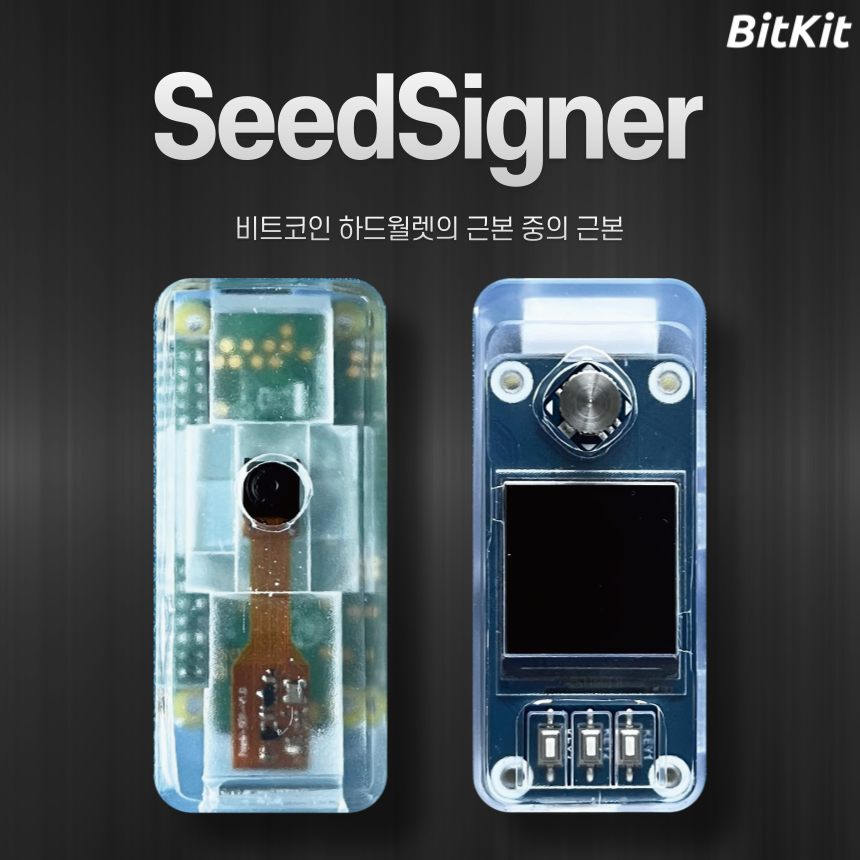
전시 상품
시드사이너 (링커 : 비트키트) 이것은 제품을 소개하는 목적의 링크 제품으로 실제 구매는 사토시마켓이 아닌 아래 판매자 웹사이트로 이동하여 진행하셔야 합니다. 판매자 웹사이트 방문하기 : https://smartstore.naver.com/bitkit 사토시마켓은 본 제품의 판매에 대해
기록 보기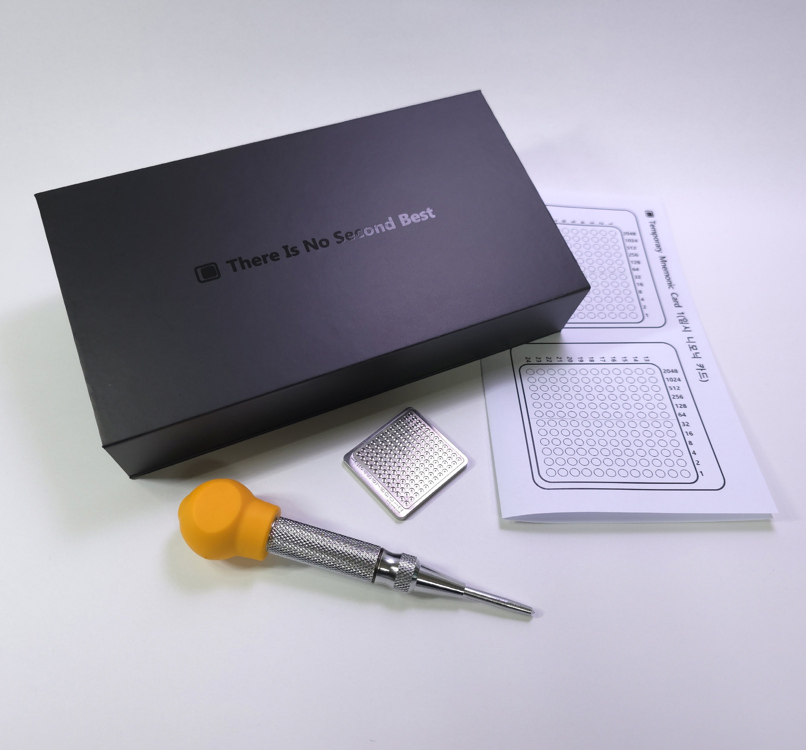
전시 상품
TINSB 니모닉 티타늄 플레이트 ( 스탠다드팩 ) (링커 : 틴스비) 이것은 제품을 소개하는 목적의 링크 제품으로 실제 구매는 사토시마켓이 아닌 아래 판매자 웹사이트로 이동하여 진행 하셔야 합니다. 판매자 웹사이트 방문하기 : https://store.btcmap.kr/stores/T
기록 보기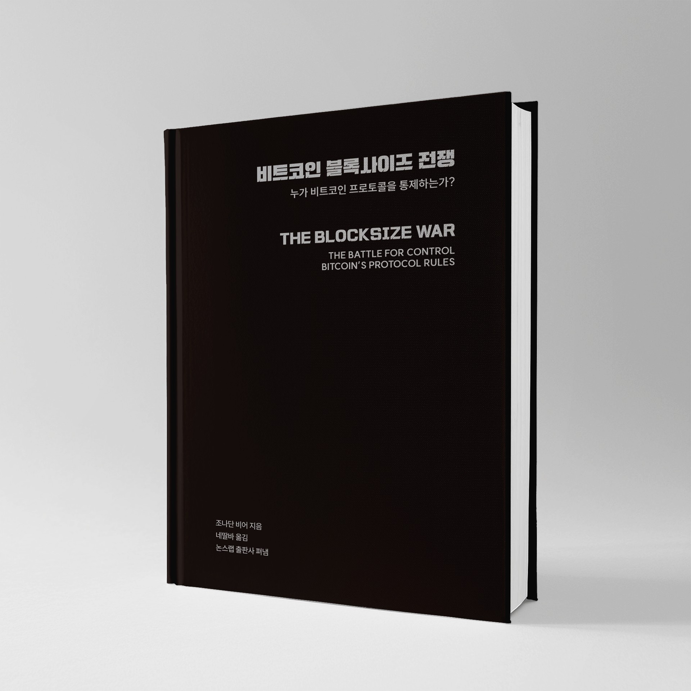
전시 상품
비트코인 블록사이즈 전쟁 THE BLOCKSIZE WAR (링커 : 포우팀) 이것은 제품을 소개하는 목적의 링크 제품으로 실제 구매는 사토시마켓이 아닌 아래 판매자 웹사이트로 이동하여 진행하셔야 합니다. 판매자 웹사이트 방문하기 : https://product.kyobobook.co.k
기록 보기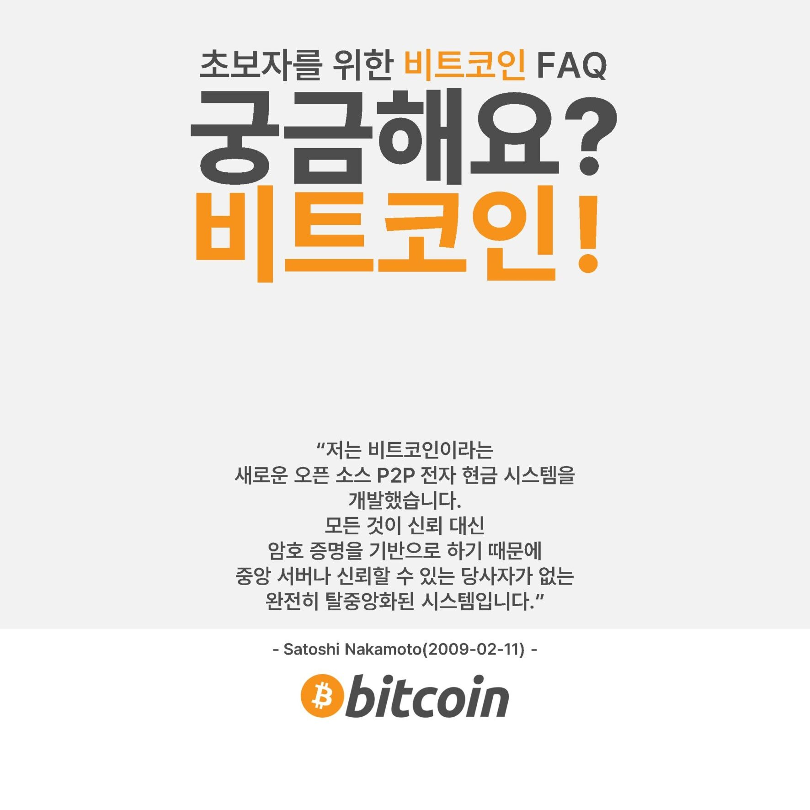
전시 상품
궁금해요? 비트코인! – 초보자를 위한 비트코인 FAQ [스폰서] 전자지갑 테스트용 제품입니다. 구입하실 때 기재한 메일로 14일간 전자책 다운로드 링크가 제공됩니다. 다운로드 링크가 만료된 이후엔 재구매가 필요하니 주의하세요. 링크가 오지 않을 때는 우선 스팸함을 확인해 주세요.
기록 보기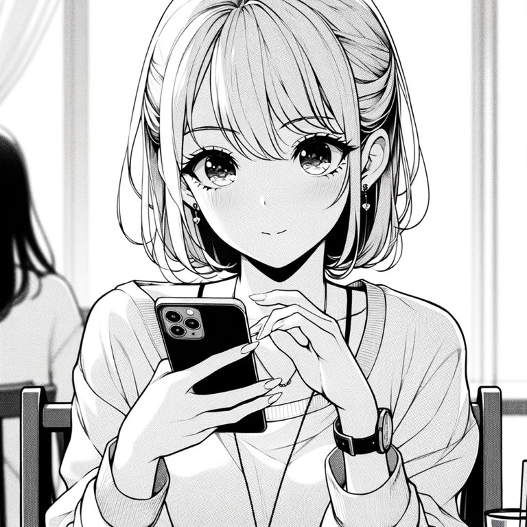
Pages
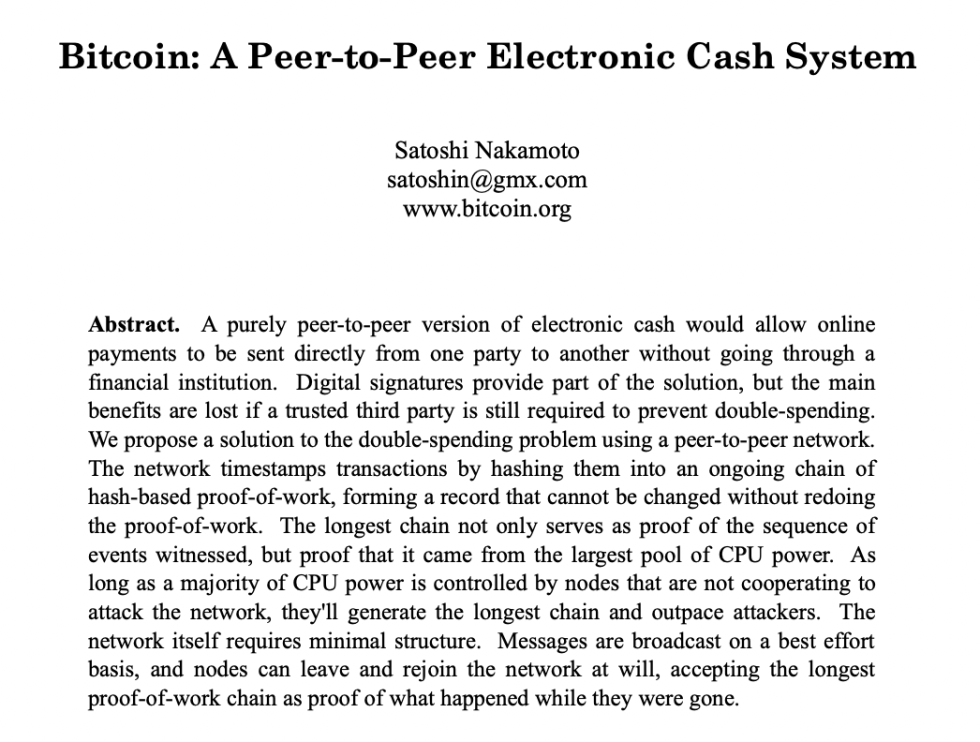
기록 페이지
사토시마켓은 비트코인이 단순히 더 많은 fiat을 얻기 위한 투기 수단이 아닌, 사토시 나카모토가 의도한 대로 실제 생활에서 fiat를 대체하여 사용될 수 있는 “P2P 전자 화폐”임을 증명하기 위해 만든 인터넷 쇼핑몰입니다.Satoshi Market is an online market
기록 보기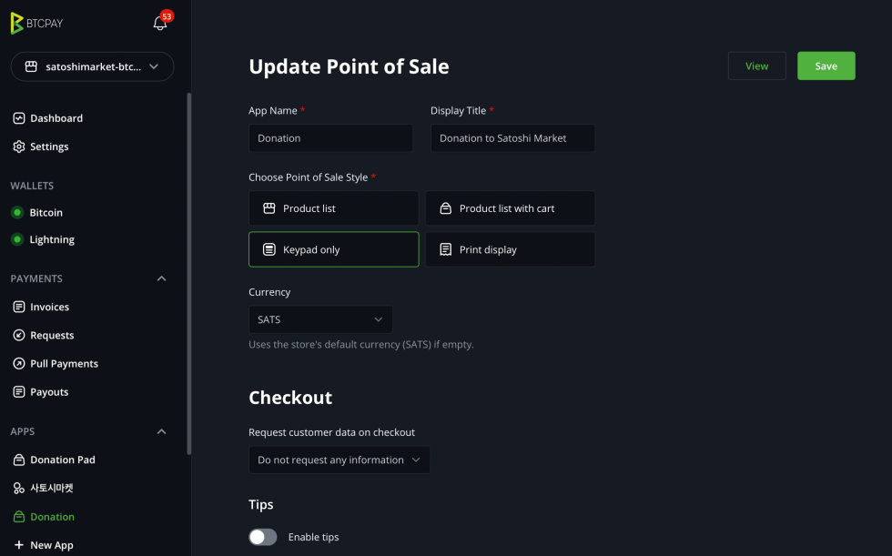
기록 페이지
2023년 시작 사토시 마켓을 운영하면서 배운 것들을 정리하는 페이지 입니다. wordpress.org : 설치형 설치형은 뮤료지만 우선 호스트업체에서 가입을 한 다음에 사용해야 한다. wordpress.com : 가입형 가입형의 경우에는 따로 호스트업체를 가입할 필요
기록 보기기록 페이지
사토시마켓에 입점을 희망하시는 분들을 위한 페이지 입니다. 마켓은 입점자의 자격에 따라 다음과 같이 운영됩니다. 입점자는 (a) 파트너, (b) 링커로 나뉩니다. 입점자 자격 구분 고객들이 결제를 하는 곳 사토시 마켓에 기부금 제공 여부 주문 정보 전달 흐름 결제금 전달 파트너 Part
기록 보기Records
Page Archive
원본 URL
사토시마켓은 비트코인이 단순히 더 많은 fiat을 얻기 위한 투기 수단이 아닌, 사토시 나카모토가 의도한 대로 실제 생활에서 fiat를 대체하여 사용될 수 있는 “P2P 전자 화폐”임을 증명하기 위해 만든 인터넷 쇼핑몰입니다.
Satoshi Market is an online marketplace created to show that Bitcoin is not merely a speculative tool for acquiring more fiat currency but a “P2P electronic cash” that can replace fiat in everyday life, as originally intended by Satoshi Nakamoto.
사토시마켓은 국내 최초로 라이트닝 결제를 지원하는 인터넷 쇼핑몰 입니다. 사토시를 이용해 물건을 사고 파는 새로운 오랜지 빛 세상에 참여하세요.
Satoshi Market is the first online marketplace in Korea to support Lightning payments. Join a new orange-hued world where you can buy and sell goods using Satoshi.
Market Place
오직 비트코인으로만 결제 가능한 인터넷 쇼핑몰입니다.
An online marketplace where payments can only be made with Bitcoin.
Join the Market
사토시마켓에서 당신의 제품을 판매해 보세요.
Sell your products on Satoshi Market.
Donation
사토시 마켓에 기부하실 수 있습니다.
You can make donations to Satoshi Market.
About Us
사토시마켓에 대한 소개입니다.
An introduction to Satoshi Market.
History
사토시마켓의 발전 기록입니다.
The development history of Satoshi Market.
사토시 마켓을 운영하면서 배운 것들을 정리하는 페이지 입니다.
wordpress.org : 설치형
설치형은 뮤료지만 우선 호스트업체에서 가입을 한 다음에 사용해야 한다.
wordpress.com : 가입형
가입형의 경우에는 따로 호스트업체를 가입할 필요는 없지만 돈을 내야 한다.
워드프레스의 임시 도메인과 내가 블루호스트에서 산 도메인이 연결되지 않을 때는
라이트닝 바자회는 동작할 수 있을까? 이것이 동작하기 위해선 사람들이 자신이 아끼는 물건을 비교적 낮은 가격에 내놓아야 하는데 어떨지 모르겠다.
사토시 마켓에 파트너들을 받기로 했다. 파트너들에게 수수료 없는 마켓을 제공할 것이다.
3/26, 첫 파트너가 골프티셔츠를 등록하였다.
https://satoshimarket.biz/ecommerce/product/아이아스-골프티셔츠남성-파트너/
우커머스에서는 결제가 안되었다고 나오는데 라이트닝에는 결제가 된 상황이 있다. 아무래도 라이트닝에서 결제가 된 내용이 BTCpay Server를 통해서 제대로 우커머스에 전달이 되지 않는 것으로 보인다.
이 문제는 우커머스에서 BTCpayServer와의 연결을 ㅊ
3/29, 웹사이트가 사라짐. 홈페이지 url을 바꿀려다가 사라졌음. 찾을 수가 없음. 난감함.
3/31, 웹사이트를 살림. 없어졌던 이유는 url 설정을 내가 마음대로 바꾸었기 때문.
내가 배운 바로는 사이트 core 라는 것이 https://satoshimarket.biz/ecommerce/에 있고, https://satoshimarket.biz/ecommerce/에 사람들이 접속할 수 있는데, 이것을 내가 마음대로 설정에서 사람들이 접속하는 주소를 https://satoshimarket.biz로 바꾸니 컴퓨터를 이용해 해당 주소에 들어가도 아무것도 안나오는 것이었음.
이를 해결하기 위해 호스팅 서버에서 다음 링크에서 설명해주는 내용을 따라 C패널에서 다시 URL 을 https://satoshimarket.biz/ecommerce/로 바꾸어 주었고 이제 정상적으로 다시 동작함.
4/1, 웹 페이지 관련 함수를 몇 개 배웠다.
4/2, 파트너와 스폰서 개념을 생각해냈다. 아이디어를 주신 무케 로스코 님께 감사.
4/3, 라이트닝 케롯에 재능 판매를 올려보았다. 동작할 수 있을까? 숨고같은 형태의 플렛폼이 될 수 있을까?
4/3, 사토시 마켓에 BTCpayServer 기능을 이용해 후원하기 기능을 달았다. BTCpayServer에 들어가면 Apps 라는 부분이 있는데 여기서 후원을 받는 키패드를 생성할 수 있다.
기부 패드를 생성한 다음엔 아래에 있는 임베드 할 수 있는 코드를 복사해서 워드프레스에 HTML 모드에서 넣어주면 된다.
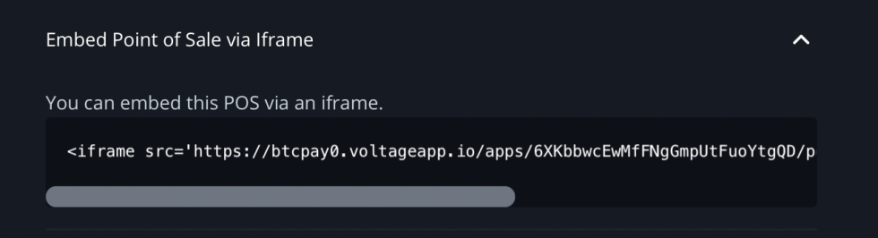
문제는 이 코드를 바로 사용하면 워드 프레스에서 이상한 크기에 구석으로 나오는 문제가 있는데, 아래와 같이 코드를 수정해서 주면 정상으로 작동한다.
<div style=”text-align:center;”> <iframe src=’https://btcpay0.voltageapp.io/apps/2hL6Y3LjAHgJDPmWQNWsyeMkK4xw/pos‘ style=’max-width: 500%; height: 720px; border: ;’></iframe> </div>
4/4 아침부터 사토시 마켓 결제가 되지 않는다. 이유를 알아보니 인바운드 유동성이 말랐기 때문이다. 사이코이티 님으로부터 인바운드 유동성을 받았고, 유동성 마켓에서 돈을 주고 유동성을 250만 사토시 구입하였다. (1만원 정도?)
4/5 우편번호 검색 기능을 추가하였다. 이제 쉽게 우편번호를 넣을 수 있다. korea for woocommerce 플러그인을 다운 받으면 된다.
4/8 라이트닝 네트워크 유동성이 너무 빨리 마른다. 인바운드가 엄청난 속도로 줄어드는데, 이래고서는 계속적인 운영이 어렵다. 물론 인바운드를 구입하는 방식도 있지만 계속 돈이 들어서 지속적으로 사용하기엔 어려운 방법인 듯 하다. 하지만 반드시 해결할 방법을 찾아낼 것이다.
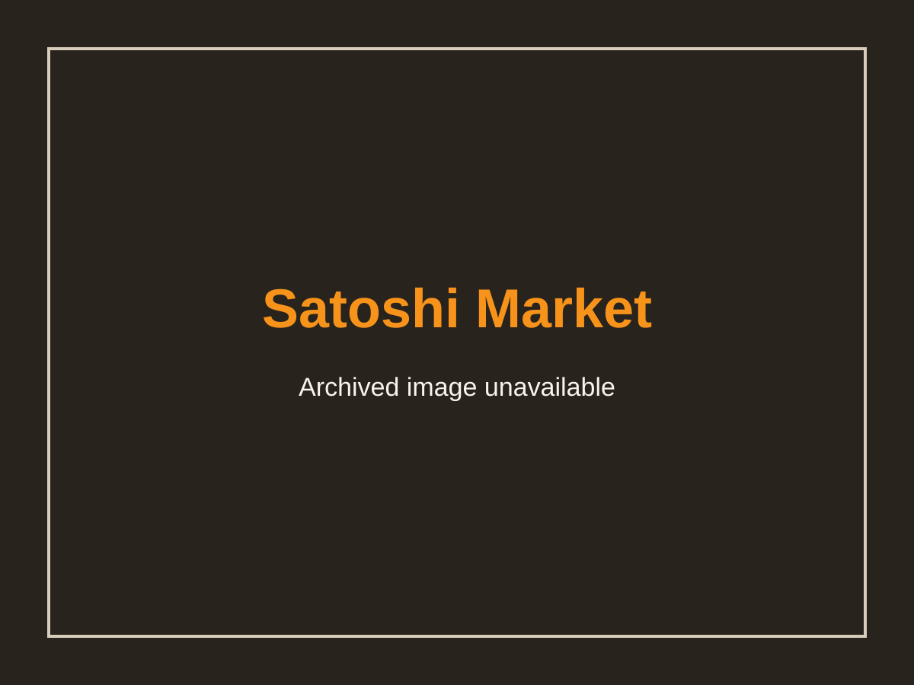
4/10 사토시 마켓의 구글 광고가 시작하였다. 아마 내일 쯤이면 네이버 광고도 시작될 것이다. 과연 사람들이 이 광고를 보고 사토시 마켓에 들어올까?
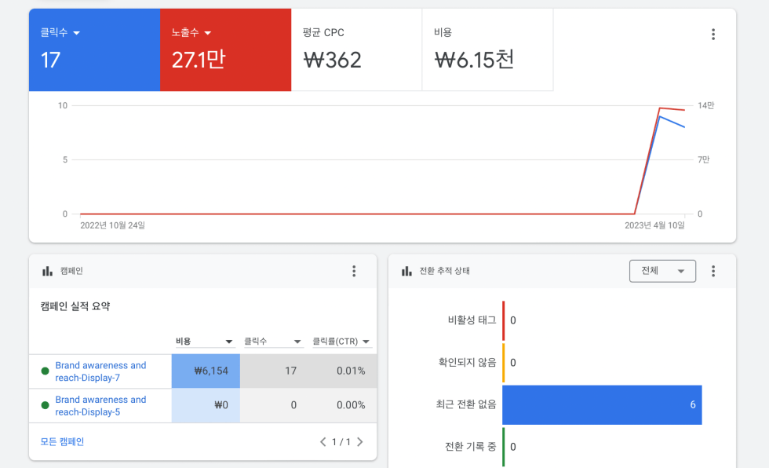
4/15 사토시 마켓 관리자를 만들기 위한 실험을 하고 있다. 아이디를 만든 후 그 아이디에 권한을 부여할 수 있는데, 우커머스를 사용하는 경우엔 조금 다른 권한들이 생긴다. 앞으로 자신이 올린 제품에 대해서 그 사람이 수정하게 할 수 있도록 뭔가 조치가 취해져야 할 것이다.
https://wpguide.usefulparadigm.com/posts/1041
4/18 사토시 마켓 최초의 용역 상품인 데드섹님의 풀노드 구축 서비스를 런칭하였다. 비트코이너들만 환장하는 제품으로 우리 마켓의 성격에는 딱 맞는 듯 하다. 앞으로 잘 되길.
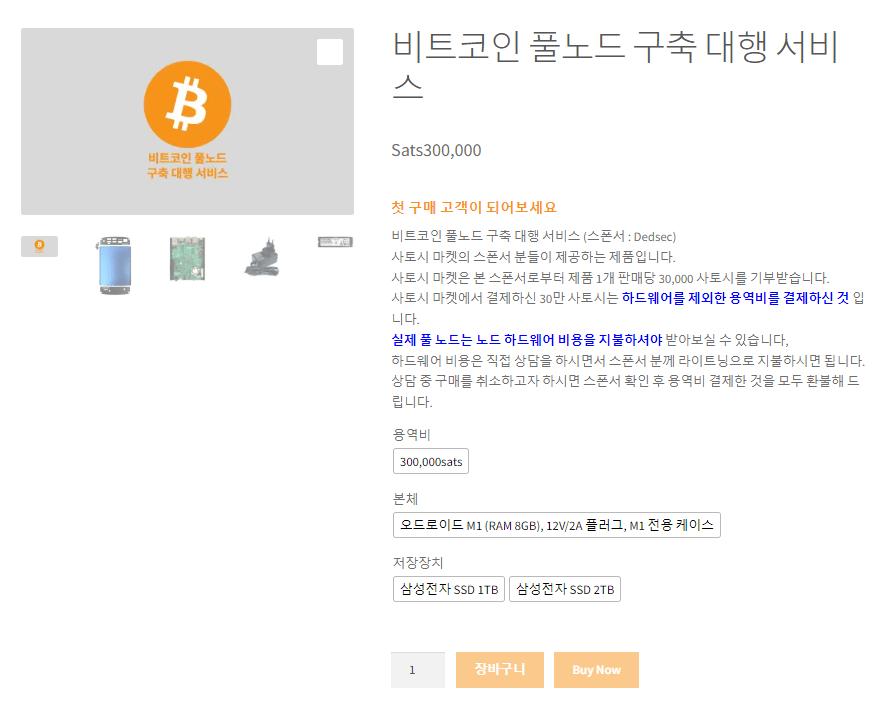
4/18, 사토시 마켓에 물건 팔릴양을 보여주는 sales counter를 달았다. 가장 많이 팔린 물건은 나무정원 커피다.
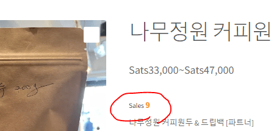
4/23, 마켓 기부 버튼을 기존 패드 형에서 슬라이드 형으로 변경하였다. 아울러 10만사토시 이상을 기부해주신 분들을 기부자 전당에 올리기로 헀다.
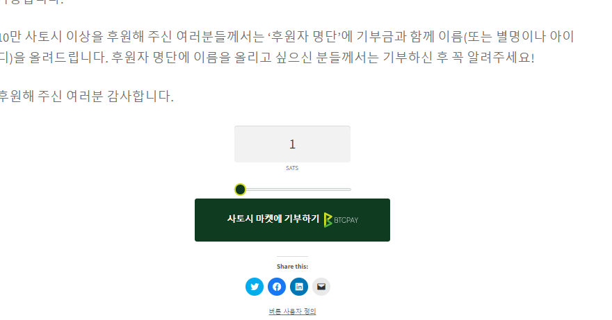
4/29, 두 번째 10만 사토시 기부자가 탄생하여 명예의 전당에 올렸다.
4/30, 할피니의 생일 (5/4)을 맞아 사토시 마켓 5천 사토시 지원 쿠폰 행사를 한달간 런칭하기로 했다. 5천 사토시를 지원한다고 할 때 사람들은 구매를 하게될까?
6/2, 오래간만에 사토시 마켓에서 야나부님의 볼트카드를 판매하기 시작하였다. 좀 더 라이트닝 결제가 쉽게 되는 세상이 오길.
6/2, 사토시 마켓에서 비트코인 매장 스티커를 팔기 시작했다. pshock46님이 제작하셔서 무료로 보급하시던 스티커였다. 사장님들께서도 비트코인을 “사용” 하실 수 있는 기회를 얻길…
6/26, 라이트닝 캐롯에서 두 번째 원화-비트코인 p2p 거래가 완료되었다.
7/15, 캐주얼 오픈 하드웨어인 너드마이너가 판매되기 시작하였다. 판매를 시작한 첫 날 준비한 3개가 모두 팔렸다. 다음날 두 개를 추가로 조달하였고 그 중 하나도 팔리는 가장 빠른 초반 판매 속도를 보이고 있다.
10/4, 사토시 마켓 최초로 쿠폰형 상품이 판매되었다. POW 에서 경품으로 구입한 너드마이너 2개이다.
https://youtube.com/shorts/Igm2q7OsuCg
1/20, 2024년을 맞아 사토시 마켓에 새 제품들이 들어왔다.
2/1, 1월에 진행하였던 21가지 교훈 책 이벤트를 종료하였다. 이벤트 기간동안 96권의 책이 판매되었다.
2/17, satoshimarket.biz의 도메인과 호스팅 서비스를 1년 연장하였다. 3/3일이면 한살이 된다.
3/3, 라이트닝 노드 관련 리벨런싱 테스트를 해보고 있다. 인바운드 아웃바운드 모두 충분한데도 불구하고 거래가 안되는데, 뭔가 체널이 서로 덜 연결되었다(?)같은 생각이 드는데 아직 잘 몰라서 공부중이다. 리벨런싱이라는걸 해야 하는거 같은데 그것도 제대로 안되고 계속 오류가 떠서 답답하지만 분명 해결할 방법이 있겠다.
3/11, 웨이크업보어드의 커피를 판매하기 시작하였다. 커피 제품은 이로서 두 번째이다.
3/26, 사토시 마켓의 1주년이 되었다. 지금은 누구도 모르고 있지만 어쩌면 누군가 여기에서 이 글을 읽고 기억해 주겠지. 생일 축하해.
4/1, 비트코인 낙관론 책 사전 할인 판매 행사를 종료하였다. 일주일간 84권의 책이 판매되었다. 지난 21가지 교훈 보다는 적지만 이벤트 기간에 비하면 상당히 많이 팔린 편이다.
5/11, 비트모인 디플로마가 판매되기 시작하였다. 판매량은 매우 적은 편이다. 아마도 무료로 볼 수 있는 PDF가 이미 존재하고 있기 때문일 것이다. 그래도 적지만 조금씩 꾸준히 팔리는 편이다.
6/8, 시드사이너 케이스 제품이 추가되었다. 호들러가 참 예쁘다.
7/1, 볼트웨어의 반지 제품을 대행 판매할 예정이다. 일본 비트코이너가 만든 제품으로 언젠가 라이트닝 결제로 국가간 거래가 되는 시대가 오길.
11/19, ‘비트코인 블록사이즈 전쟁’ 판매를 시작하였다.
11/20, 사토시 마켓에서 이루어진 거래가 총 500건을 돌파하였다.
11/23, 새로운 명예의 전당 기부자가 나타나셨다. 지분전쟁 상원수님. 감사합니다.
11/28, 블록사이즈워 사전 판매 행사는 총 181권의 판매를 기록하였다.
12/2, 홈페이지의 주인과 관리자 사이에 권한 차이가 있다는 것을 배웠다. 관리자 아이디로 들어간 상태에서 워드프레스의 ‘플러그인’이 없어져서 당황한 체로 한 시간 동안 당황했는데 알고보니 주인이 아니라 관리자라서 플러그인은 볼 수조차 없었던 것이다. 하아. 바보같아.
12/2, 주문시 전화번호가 기록되지 않는 오류를 한 시간 만에 고쳤다. 원인은 우커머스에서 제공하는 기본 필드가 아닌 내가 만든 커스텀 필드였기 때문이었다. 그래서 커스텀 필드다 보니 export orders 할 때 전화번호가 모두 누락 되었던 것.
12/4, 새로운 명예의 전당 기부자가 나타나셨다. 산시야님. 감사합니다.
12/8, 제품 주문 시 전화번호가 반드시 포함되도록 수정하였다. 사토시마켓은 비실명 거래를 전제로 만들어진 웹사이트이기 때문에 전화번호를 넣지 않아도 되게 하였지만, 배송 사고가 자꾸 나서 파트너/스폰서 분들의 건의를 받아들여 전화번호를 반드시 넣어야 하는 것으로 변경하였다. 원래 배송 사고는 항상 물량의 5% 정도 나기에 수동으로 처리해왔는데, 이번 블록사이즈워가 200권 가까이 팔리면서 배송사고가 10건 가까이 나버렸다. 그것으로 인한 고객님과 스폰서 분들의 불편은 어쩔 수 없고… 웹사이트가 처음 지향하였던 비실명성에 대해서 실제 세상과 타협을 한 것인데, 이것이 지향하는 방향과는 다르기 때문에 여러가지 복잡한 감정이 든다.
12/24, 틴스비 철판을 판매하기 시작. 엄청난 호응으로 올리자 마자 모두 완판되었다. 좋고 싼 제품은 언제나 잘 팔린다는 진리가 또 증명되었다.
12/27, 새로운 명예의 전당 기부자가 나타나셨다. 다내꺼(틴스비)님 감사합니다.
2025년 시작
1/11, 사토시마켓에 링크만 걸어서 본인의 웹사이트로 연결하는 ‘링커 Linker’ 개념을 새롭게 도입해 보았다. 지금까지는 라이트닝결제 자체가 생소한 것이기에 판매자분들이 사토시 마켓에 결제 과정을 위탁하였지만, 앞으로는 라이트닝 결제 자체가 보급되어 모든 사업자가 라이트닝 결제를 가질 것이기에 이를 대비하기 위해 미리 링커 개념을 만들었다. 만약 링커가 파트너/스폰서보다 더 많아지는 상황이 올 경우 사토시마켓은 이제 물건을 올려서 파는 쿠팡의 형태에서 물건을 소개하는 다나와와 비슷한 형태의 웹사이트로 방향이 바뀔 듯 하다.
| 입점자 자격 구분 | 고객들이 결제를 하는 곳 | 사토시 마켓에 기부금 제공 여부 | 주문 정보 전달 흐름 | 결제금 전달 |
| 파트너 Partner | 사토시마켓 | 해당사항 없음 | 고객 >>사토시마켓 >>입점자 (매일 밤 10시) | 사토시마켓>>입점자 |
| 스폰서 Sponsor | 사토시마켓 | 스폰서가 원하는 만큼 사토시 마켓에 건당 기부 (판매금 3~5% 권장) | 고객 >>사토시마켓 >>입점자 (매일 밤 10시) | 사토시마켓>>입점자 (기부금을 제외 한 금액 전달) |
| 링커 Linker | 링커가 원하는 웹사이트 (링커의 스마트 스토어 등) | 해당사항 없음 | 고객 >>입점자 (사토시 마켓은 주문정보 관리하지 않음) | 해당사항 없음 |
1/13, 스폰서 제도를 없에기로 결정하였다. 앞으로 사토시 마켓에는 파트너와 링커만 존재하며 기존 스폰서는 모두 파트너로 전환시켰다.
1/13, 최초의 링커 제품이 등록되었다.
1/20, 배송료 테스트를 해보았다.
배송료를 설정하려면 우커머스 메뉴 – 배송 – 클래스 추가 를 한 다음, 클래스에서 얼마의 배송비를 설정할지 정하고 각 제품에 적용해주면 된다. 한번 적용된 배송클래스가 내용이 변할 경우 제품에 3sat이 배송료로 설정되는 오류가 있으니 배송 클래스를 수정했다면 기존 배송비 설정 제품들도 함께 배송비에 요류가 나진 않는지 반드시 테스트 해볼 것.
1/22, 새로운 명예의 전당 기부자가 나타나셨다. 윈터펠님 감사합니다.
1/27, 프로메나드에서 새로운 비트코인 스티커를 등록하였다. 한국에 더 많은 비트코인 받는 매장들이 생기길
1/29, 새로운 명예의 전당 기부자가 두 분이나 나타나셨다(커플이신 것으로 추정? ㅎㅎ, 총 20만 사토시 기부해 주). 필레몬님, 바우키스님 감사합니다.
1/29, 새로운 명예의 전당 기부자가 두 분이나 나타나셨다(커플이신 것으로 추정? ㅎㅎ, 총 20만 사토시 기부해 주). 필레몬님, 바우키스님 감사합니다.
2/6, 필레몬님/바우키스님의 ‘비트코인 백서’ 해설집이 새 제품으로 등록되었다. 이번 제품은 링커 제품으로 모든 결제는 필레우시스 스토어에서 https://store.phileucis.com/product/bk-btc-01-01/ 비트코인으로 진행되고 사토시마켓은 이 제품의 홍보 및 연결만 시켜주는 역할을 한다. 링커제품은 사토시마켓에 비즈니스 적으로 보았을 때 아무런 도움도 되지 않는 제품이다. 오히려 웹사이트의 자원만 사용한다. 하지만 왜 링커 제품이 등록되어야 하는가? 그것은 바로 ‘단일 실패점’ 문제를 극복하기 위해서이다. 사토시마켓은 점점 한국에서 많은 제품들이 올라오고 있는데 이들이 모두 사토시마켓의 결제시스템에 의존할 경우 악의적인 공격자가 노드나 사이트 폐쇄 등 공격을 가하면 속절없이 모든 결제망이 한번에 마비된다. 따라서 가능하다면 모든 결제는 각자의 스토어에서 라이트닝 등으로 진행하고, 사토시마켓은 이러한 링커 제품들을 소개하는 자리 및 아직 스스로 결제 시스템을 구축할 수 없는 분들을 위해 그분들이 스스로 결제 시스템을 구축할 수 있을 때 까지 결제를 대신 진행해주는 웹사이트로 나아가고자 한다. 이러한 사토시마켓의 변화 아이디어는 (1) 비트코인의 분산 네트워크 구조, (2) 과거 비트코인 보드게임을 개발한 맥시스 게임즈의 보드게임 독립 판매 방식 (지금은 없어짐), (3) 프로메나드에 대한 최근 악의적 공격 사례, (4) 컴퓨터 제품을 모아 가격을 보여주는 다나와 웹사이트의 비즈니스 방식 이렇게 네 가지에서 영감을 얻었다. 필레몬님께서도 본인이 습득하신 스토어 구축 기술을 이제 주변에 전파한다고 하시니 무척 기대가 된다. 비트코인 관련된 많은 제품들이 사토시마켓에 올라오고, 또는 연결되고, 한국에 점점 비트코인 거래 생태계가 퍼져나가길 기대해본다.
3/11, 필레몬님/바우키스님께서 다시한번 거액을 기부해 주셨다. 정말 감사합니다.
3/16, 필레몬님께서 비트코인 라이트닝 네트워크를 이용한 자체 결제 웹사이트를 구축하는 법을 만들어 주셔서 여기에 정리해 둔다. 이 것을 따라하면 (좀 복잡하긴 하지만) 자신의 사토시 마켓, 필레시우스 마켓을 만들어낼 수 있다. 결제 웹사이트를 자체적으로 만들고 싶으신 분들께서는 아래 내용을 따라하기만 하는 것으로 수십 시간의 시행착오를 줄일 수 있을 것이다!
BTC 온라인 결제 매장 만들기 1: 워드프레스 우커머스 설정
https://powbitcoiner.com/posts/4048
BTC 온라인 결제 매장 만들기 2: BTCPay Server 설정 및 클라우드 플레어 터널 연결
https://powbitcoiner.com/posts/4049
BTC 온라인 결제 매장 만들기 3: BTCPay Server 도메인 연결
https://powbitcoiner.com/posts/4058
3/30, BSL의 온라인 교육 1회차가 잘 종료 되었다. 20명이 참가해 주셨으며 사토시 마켓은 20명에 대해 결제 관련 프로세스를 진행하였다. 데드섹님, 필레몬님, 덤불개님, Noelle님 모두 감사 및 수고하셨습니다.
3/31, 우커머스에 웹사이트 구매 관련 정보가 연결되지 않는 문제가 발생하였다.
해결법 : 가장 단순한 해결법은 웹사이트에 연결되어 있는 Jetpack을 끊었다가 다시 연결하는 것이다. 이 방법으로 Jetpack을 다시 연결한 후, 핸드폰에 깔려있는 Woocommerce App 에서 로그아웃 한 후 다시 로그인 한다. 이 때 웹사이트에서 특정 앱의 연결을 인증해야 하는데, Woocommerce 연결할 때 같이 할 수 있으니 너무 걱정할 필요는 없다. 지금은 정상 작동 중.
3/31, 우커머스를 고치니 비트코인 백서 제품 그림만 로딩/업로드 가 안되는 이상한 일이 벌어진다. 다른 그림도 되고, 다 되는데 백서 제품만 이상함… 제품을 복사해도 같은 오류가 발생하는 중인데. 이유를 모르겠다. 정말 환장하겠네.
지금까지 해본 것들 : 1. 제품을 복사해서 새로 업로드 해보기, 2. 그림 파일을 작게 만들어 보기, 3. 여러번 업로드 시도해보기.
4/1, 비트코인 백서 제품 그림만 로딩/업로드 가 안되는 현상이 해결되었다. 해결법은 백서 그림으로 업로드 한 후… 아주 오랫동안 기다리는 것. 20분 쯤 아무생각없이 다른 일 하다 오니 정상적으로 업로드가 되어있고 페이지에도 잘 나온다.
4/15, 사토시마켓 기부금 받기를 중단하였다. 내가 한국에 없는 동안 사토시마켓에 대한 공격 가능성을 조금이라도 줄이기 위해서이다. 그간 기부해 주신 모든 분들 감사합니다.
4/15, 사토시마켓 기부금 받기를 중단하였다. 내가 한국에 없는 동안 사토시마켓에 대한 공격 가능성을 조금이라도 줄이기 위해서이다. 그간 기부해 주신 모든 분들 감사합니다.
12/6, 지난 3개월 이상 사토시 마켓에는 주문이 들어오지 않았다. 물론 라이트닝 테스트는 한 번씩 들어온다. 오늘은 이런 의미에서 제품들을 싹 한 번 정리하였다. 앞으로 조금 씩 사토시 마켓을 변화시킬 생각이다.
2026년 시작
5/2, 사토시 마켓의 결제 체널을 모두 닫고 마켓으로서의 기능을 정지하였다.
3년간 총 1,029번의 거래, 총 거래액 3,590만 sat 이 일어났다.
지난 3년간 함께 해준 한국의 비트코이너 분들과 유동성을 공급해주신 동료 라이트닝 노드 러너들께 감사드린다. 3년전 사토시 마켓을 시작할 때만 해도 다소 ‘이게 될까’ 라는 마음을 가지고 시작했는데, 그 사이에 책도 많이 팔고 거래도 많이 일어나고 많은 사람들이 라이트닝 결제를 경험하는 꿈과 같은 일들이 일어났다. 하지만 사토시 마켓에도 한계는 있는 법. 중앙화되고 외주업체(볼티지)에 의존하는 마켓은 그 지속성이 영원할 수가 없다. 다나와와 같은 소개 플랫폼으로의 전환도 고려해보았지만, 그냥 사토샵에 가면 되는데 뭘 또 그런걸 해~ 라는 생각에 (다나와는 용산에 찾아가는 수고를 줄여준 고마운 플랫폼이었지만, 라이트닝 마켓엔 이미 용산이 없었다 ㅎㅎ) 그것은 ‘링커’ 라는 형태로 중간 버전의 모습만 만든 후 끝까지 추진하진 않았다.
그 간 필레몬님의 라이트닝마켓도 있었지만, 이제는 사토샵이라는 어엿한 완성형 플랫폼이 등장해있고 꾸준히 성장하고 있어 사토시 마켓을 닫는 것에 대해서 아주 큰 여한은 없다 (솔직히 나도 사람인지라 아쉬움이 쪼금 있긴 하다 ㅎㅎ).
사토시 마켓은 앞으로 결제 기능은 없고 사이트를 이전하거나 변경하거나 아직 계획된 것은 없지만 일종의 인터넷 박제로 남아있을 생각이다. 어떻게 해야 인터넷에 아카이브 형태로 박제 시킬 수 있을지는 좀 더 공부해봐야 겠지.
세상에 공부할게 끝이 없구나.
사토시 마켓에 기부해주신 많은 분들, 그리고 이용해주신 분들, 파트너와 스폰서 분들 모두 감사하며, 모두를 언급해야 하는게 인지상정이겠지만, 상황상 아래 몇 분만 특별히 언급하고 마무리 하고자 합니다.
먼저 사이코이티님. 당신이 라이트닝 결제를 한국 비트코이너 업계에 알려주신 덕 분에 즐거운 프로젝트가 시작될 수 있었습니다. 내가 사토시 마켓을 낳았다면 당신은 잉태를 시켰소 (뭐야 아버지얔/ ㅋㅋㅋ). 초기에 부딪힌 많은 기술적 문제에 해결을 주셔서 사토시 마켓이 정상 운영을 시작할 수 있었습니다. 진심으로 감사드립니다.
데드섹님과 포우 사장님 및 여러 스폰서/파트너/링커 분들. 마켓 초기부터 함께 진흙탕에서 구르며 다양한 상품을 공급해주시고 이것저것 발생한 수많은 문제를 함께 해결하였습니다 (앜 배송/결제 문제 ㄷㄷ). 당신들이 없었다면 사토시마켓은 그저 텅 빈 공허한 공간이었을 것 입니다. 사토시 마켓에 사람들이 올 수 있는 생명력을 불어넣어주셔서 감사합니다. 제 개인적으로는 포우의 책들과 (블록사이즈워 번역자 네딸바님께도 감사합니다) 풀노드 구축 서비스가 기억에 많이 남네요 ㅎㅎ
필레몬/바우키스님. 지금도 어디선가 조용히 비트코이너들을 위해 공헌하고 계시리라 믿습니다. 사토시 마켓의 단일 실패점 문제에 대해서 공감해 주시고 문제 방지를 위해 두 번째 마켓을 만들어 주셨었던 용기와 노력에 감사드립니다. 덕분에 좋은 책도 읽게 되고 두 분의 공헌을 보면서 저도 많은 생각을 하게 되었습니다. 모두의 귀감이십니다.
그리고 마지막으로 어디 계신지 모르는 홍길동님께도 감사드립니다. 당신이 라이트닝 당근에 내건 원화팔고 비트코인 삽니다는 아직도 머릿속에 강렬한 인상으로 남아있습니다. 아마 지금도 어디선가 조용히 보고 계시겠죠. 당신이 가르쳐 주신 익명성의 소중한과 숨은 공헌에 대해 늘 감사드립니다.
사토시 마켓은 결제 기능은 끝났지만 아직 모든게 끝난건 아닙니다. 또 한번 재미있는 프로젝트로 찾아뵐 수 있길.
사토시마켓에 입점을 희망하시는 분들을 위한 페이지 입니다.
마켓은 입점자의 자격에 따라 다음과 같이 운영됩니다.
입점자는 (a) 파트너, (b) 링커로 나뉩니다.
| 입점자 자격 구분 | 고객들이 결제를 하는 곳 | 사토시 마켓에 기부금 제공 여부 | 주문 정보 전달 흐름 | 결제금 전달 |
| 파트너 Partner | 사토시마켓 | 해당사항 없음 | 고객 >>사토시마켓 >>입점자 (매일 밤 10시) | 사토시마켓>>입점자 |
| 링커 Linker | 링커가 원하는 웹사이트 (링커의 스마트 스토어 등) | 해당사항 없음 | 고객 >>입점자 (사토시 마켓은 주문정보 관리하지 않음) | 해당사항 없음 |
[상세 결제 후 흐름: 파트너의 경우]
(1) 사토시 마켓에서 고객의 주문과 결제가 끝나면
(2) 운영자인 제가 입점자 분께 결제가 완료된 오더 내역을 전달하고
(3) 물건 공급자께서 이를 바탕으로 구매자에게 직접 배송합니다.
(4) 정산은 원화가 아닌 ‘사토시’만으로 일주일에 한번 진행합니다.
[상세 결제 후 흐름: 링커의 경우]
(1) 고객은 사토시마켓에서 제품을 본 후 구매를 하려면 링커의 웹사이트로 이동하게 됩니다.
(2) 링커의 웹사이트에서 고객은 제품 주문을 합니다.
(3) 물건 공급자께서 이를 바탕으로 구매자에게 직접 배송합니다.
위 내용에 동의하시고 입점 의향이 있으시다면 ajotsee@proton.me 로
(a) 상품 이름
(b) 상품 사진
(c) 상품 가격 (옵션이 여러개라면 옵션별 가격, 배송비는 항상 포함된 것으로 기록)
(d) 상품 소개 내용
(e) 원하시는 입점 자격
(f) 원하시는 사토시마켓 기부금 (스폰서만 해당)
의 6가지 정보를 보내주시면 제품 심사 후 입점 등록 해 드리도록 하겠습니다
비트코인 결제 활성화를 위해 비트코인과 관련된 가능한 모든 제품을 다 입점 시키고자 합니다. 다만 비트코인과 관련 되더라도 다음과 같은 제품들은 입점이 거부되며, 동시에 다음에 제한되지 않습니다.
(a) 불법적인 상품 : 마약, 무기, 장물, 모조/가짜 상품 (일명 짝퉁) 등
(b) 판매에 허가가 필요한 상품 : 의약품, 화학 물질, 식품, 미인증 전자기기, 미인증 통신기기 및 기타 판매에 정부 허가 및 등록이 필요한 상품 (부동산, 차량 등)
(c) 기타 사회 미풍 양속을 해치는 상품 : 음란물, 성인용품 등
카카오톡 오픈 채팅을 통해 언제든 편하게 문의 주세요!
“가치가 녹지 않는 디자인, 비트코인의 철학을 담다.”
MELTINGOODS는 비트코인의 상징성과 라이프스타일 감각을 결합한
프리미엄 굿즈 브랜드입니다.
이번에 제안드리는 비트코인 프리미엄 세트는
하루의 시작부터 여유의 순간까지 함께할 수 있는
세 가지 아이템으로 구성되었습니다.
세라믹 머그컵: 블랙&화이트 투톤 디자인과 골드 코인 엠블럼으로 완성된 프리미엄 라인.
묵직한 질감과 안정감 있는 손잡이로 감각적인 테이블 연출이 가능합니다.
스테인리스 오프너: 스테인리스 소재의 고급 메탈 오프너로,
비트코인 코인 디자인이 손끝에서 묵직한 존재감을 전합니다.
캠핑, 홈바, 오피스 등 어디서든 품격 있는 사용감을 제공합니다.
메탈 아이스볼: ‘녹지 않는 가치’를 상징하는 304 스테인리스 아이스볼.
위스키나 에스프레소 본연의 맛을 오래 유지하며,
환경적인 지속 가능성까지 고려한 실용적 디자인입니다.
각 제품은 고급 블랙 패키지와 골드 포일 로고로 마감되어
기념품, 기업 선물, 크립토 컬렉션 굿즈로 모두 적합합니다.
하나의 세트로 구성하여, 단순한 오브제가 아닌
‘디지털 가치의 실물화’라는 MELTINGOODS의 철학을 담았습니다.
■ 배송안내
• 오후 10시까지 주문 완료에 한하여 익일 발송되며 1~2일 내 수령하실 수 있습니다. 주문일 다음날이 주말/공휴일인 경우 제일 가까운 돌아오는 평일에 발송됩니다.
■ 스탠다드팩 제품구성
• 티타늄 니모닉 헥사바 : 1개
• 일본제 오토센터펀치 : 1개
• 박스 및 QR(메뉴얼, Word List) : 1개
• 임시 니모닉 카드 : 1장
■ 티타늄 니모닉 헥사바 사양
• 소재 : Titanium
• 기록용량 : Bar당 최대 24단어
• 사이즈 : 약 79 × 9.5㎜(길이 × 두께)
• 무게 : 약 23 g / Bar
• 제조국 / 디자인 : 한국 / 틴스비
■ 오토센터펀치 사양
• 제조사 : 에이신(EISHIN)
• 소재 : SK4 팁, 엘라스토머 그립
• 사이즈 : 135 mm (길이)
• 무게 : 75 g
• 제조국 : 일본
■ 박스 사양
• 방식 : 마그네틱 덮개 박스
• 사이즈 : 20 × 11 × 4 ㎝ (가로 × 세로 × 두께)
• 제조국 : 중국
■ TINSB 스탠다드팩 장점
• 티타늄 원소재를 정밀하게 깎아내어 하나하나 제작되었습니다.
(기본적으로 가공 자국이 남아 있습니다.)
• 예기치 못한 사고나 극한 환경에서도 나의 니모닉을 안전하게 보관할 수 있습니다.
• 티타늄 소재는 가벼우면서도 높은 강도와 1668℃의 높은 녹는점을 자랑하며, 뛰어난 내구성과 우수한 내식성을 갖춘 특성을 지니고 있습니다.
• 펀치 유도홀이 있어 펀칭 실수를 크게 감소시켰습니다.
• 일본제 오토센터펀치는 반복 사용에도 긴 수명을 자랑하며, 엘라스토머 수지로 만든 그립은 편안한 손잡이감과 함께 손에 전달되는 충격을 효과적으로 줄여줍니다.
서문. 비트코인과 통섭
비트코인 백서 전문
■ 백서 원문 | 백서 한국어 번역
▣ 사토시 나카모토, 「비트코인: 개인 대 개인 전자 화폐 시스템」
비트코인 백서 해설
1. 서론
■ 직관적 이해
▣ 붕어빵을 사 먹는데 개인정보를 제공해야 하는가 | 취소할 수 있는 거래 | 개인 대 개인 전자 화폐 시스템 | 에스크로 시스템: 벽돌을 받지 않으려면? | 비트코인 백서 속으로
■ 심층적 이해
▣ 서브프라임 모기지 사태와 제네시스 블록 | 비트코인은 하필 왜 이 시기에 나왔을까? | 제네시스 블록에 심어진 이스터 에그 | ▣ 모든 역사는 계급 투쟁의 역사이다 | 원시공산제 | 권력의 존재 이유 | 거위가 안 아프게 털을 최대한 많이 뽑기 | 청교도 혁명 | 명예 혁명 | 미국 독립 혁명 | 프랑스 혁명 | ▣ 모든 돈은 빚이다 | 교묘한 거위 털 뽑기 방법: 인플레이션은 세금이다 | 국가가 인플레이션을 일으키는 방법 1: 지급준비제도 | 국가가 인플레이션을 일으키는 방법 2: 금리 인하 | 국가가 인플레이션을 일으키는 방법 3: 정부 지출 | ▣ 막을 수 없는 인플레이션 폭풍 | 빚의 소용돌이 | 인플레이션 화폐 제도하에서 최고의 재무 전략 | 선진국들의 상황과 비트코인의 등장 | 1장 요약
2. 거래
■ 직관적 이해
▣ 화폐의 본질 | 모든 돈에는 이야기가 담겨 있다 | 전자 코인을 디지털 서명의 체인으로 정의한다 | ▣ 개인키와 공개키 | 개인키, 서명, 공개키에 대한 비유 | ▣ 이중지불 문제 | 사기꾼 맬러리의 돈 복사하기 | 단일 장애 지점 | 거래에 시간을 적을 수 없는 이유
■ 심층적 이해
▣ 개인키와 보안 | 비트코인 계좌를 개설하려면 어디로 가야 하나요? | ▣ 정보 엔트로피 | 주사위를 던져야 하는 이유 | ▣ 비트코인의 소유권 | 비트코인의 소유권 주장 방법: Not your keys, Not your Bitcoin | 비트코인 8,000개를 버린 제임스 하웰스 | 비트코인 지갑의 종류 | 비트코인도 해킹당했다는 사람들이 있던데? | ▣ 거래소, 디파이, 알트코인 문제 | 거래소 문제 | 디파이 플랫폼 문제 | 알트코인 문제 | ▣ 사유재산을 지킬 자유 | 누구도 빼앗을 수 없는 사유재산
■ 기술적 이해
▣ 비트코인의 실제 거래 데이터 | 비트코인 최초의 거래 | 스크립트 언어, 잠금 스크립트와 해제 스크립트 | 2장 요약
3. 타임스탬프 서버
■ 직관적 이해
▣ 해시란 무엇인가 | 해시 함수 | 해시 함수의 특징 1: 일가성 | 해시 함수의 특징 2: 고정된 길이 출력 | 해시 함수의 특징 3: 눈사태 효과 | 해시 함수의 특징 4: 단방향성 | ▣ 시간의 새로운 정의, 타임스탬프 서버 | 블록이란? | 서랍의 대표 번호: 블록 헤더 해시 | 시각이 안 적힌 타임스탬프
■ 심층적 이해
▣ 블록체인 마케팅의 허상 | 블록체인은 최첨단 기술이 아니다 | 블록체인이 무엇인지 제대로 이해를 못 한 기업들 | 하위 테스트와 미등록 증권 | 투자자들을 속이거나, 참여자들을 속이거나
■ 기술적 이해
▣ 비트코인의 실제 블록 구조 | 블록 헤더와 바디 | 16진수 Hex, 10진수 Decimal, 2진수 Binary | 직렬화, 리틀 엔디안, 빅 엔디안 | ▣ 암호학적 해시 함수와 SHA256의 보안 | SHA256은 다대일함수다 | 암호학적 해시 함수의 조건 | 해시 충돌 | 무차별 대입 공격과 열역학 제2법칙 | ▣ SHA256의 비관적 전망 | SHA256의 보안성에 대한 비관적 전망 | SHA256 충돌이 발견되면 비트코인은 어떻게 되는가 | ▣ SHA256 해시 함수 알고리즘 | SHA256 함수 알고리즘 직접 계산해보기 | K값, H값, W값 | 라운드 함수 | SHA256 함수의 눈사태 효과와 역상 저항성 | 3장 요약
4. 작업증명
■ 직관적 이해
▣ 누구의 블록이 진짜인가? | 작업증명에 대한 비유 | 애덤 백의 해시캐시 시스템: 스팸 메일을 막는 방법 | 비트코인의 작업증명 시스템 | 채굴자 네트워크에서 다수결을 실행하는 방법 | 백서 11장에 대한 예고편: 맬러리의 해킹 가능성 | 작업증명의 난이도 조절
■ 심층적 이해
▣ 화폐의 바람직한 생산 방식 | 진정으로 희소한 자원: 에너지와 시간 | 화폐의 바람직한 생산 방식 | ▣ 비트코인과 에너지 혁명 | 비트코인이 환경 문제를 일으킨다는 인식 | 선진국과 개발도상국 간의 에너지 갈등 | 비트코인이 가져올 에너지 혁명 | ▣ 채굴이 비트코인의 가격을 결정한다는 오해 | 매몰 비용의 오류와 손실 회피 편향 | 화폐의 수요 | ▣ 채굴 풀의 구조 | 복권 연합 | 채굴 풀 시스템
■ 기술적 이해
▣ 논스값, 난이도, 목푯값 | 난이도와 목푯값 | 난이도 계산 방법과 난이도 조정 | 블록 헤더의 타임스탬프 | 4장 요약
5. 네트워크
■ 직관적 이해
▣ 분산화된 비트코인 네트워크 | 비트코인 네트워크에서의 노드 | 거래가 전파되는 과정: 거래의 독립적 검증 | 채굴자가 하는 일: 검증된 거래를 블록에 넣고 작업증명 하기 | ▣ 채굴 경쟁과 분기 | 서로 먼 곳에서 동시에 작업증명이 완료되었을 때 | 거래 데이터가 모든 노드에 도달해야 할까? | 블록을 못 받았을 경우 | ▣ 나카모토 합의 | 비트코인은 합의 네트워크다
■ 심층적 이해
▣ 파괴할 수 없는 네트워크 | 분산화된 네트워크는 없앨 수 없다 | ▣ 비트코인의 중립성과 민주주의 | 비트코인의 중립성 | 민주주의는 왜 중요한가 | 현대 민주주의의 한계 | 민주평화론 | ▣ 비트코인의 개발자 민주주의 | 개발자 민주주의: BIP | 비트코인 개발자들 | ▣ 비트코인의 채굴자 민주주의 | 채굴자 민주주의: 버전 비트 시그널링 투표 | 채굴 풀과 대의민주주의, 작업증명과 대표자 결정의 문제 | ▣ 비트코인이 제시하는 진정한 민주주의 | 풀 노드 민주주의: UASF, URSF | UASF와 URSF가 제시하는 바람직한 민주주의 | 비트코인은 나카모토 계수 경쟁에서 벗어나 있다
■ 기술적 이해
▣ 비트코인 네트워크 연결 방식 | 비트코인 네트워크에 연결되는 방식 | 초기 블록 다운로드: IBD | 채굴자 중개 네트워크와 압축 블록 전송 | ▣ 기반 레이어의 불변성 | 인터넷 인프라의 마지막 한 조각: 비트코인 | 가변 레이어의 불변성 | 5장 요약
6. 인센티브
■ 직관적 이해
▣ 인플레이션에서 완전히 자유로워진다 | 코인베이스 거래: 모든 UTXO의 기원 | 작업증명을 채굴이라 부르는 이유 | 채굴 보상 반감기 | 사전 채굴과 공정성 | ▣ 수수료 인센티브 | 수수료 문제 | 커피를 사 마시는 데 10분을 기다려야 할까? | ▣ 인센티브와 보안 | 2140년이 되면 비트코인이 망한다? | 정직함이 최선의 방책이다 | 악의적인 개인이나 단체가 비트코인 네트워크를 공격할 수 있는가
■ 심층적 이해
▣ 화폐의 역사와 현대의 거대한 실험 | 자본주의가 필요한 이유 | 화폐의 역사와 인플레이션 | 전 세계가 참여하는 거대한 실험: 달러는 영원할 것인가 | ▣ 가치를 저장할 수 있는 건전한 돈 | 화폐와 돈의 차이 | 저량 대 유량 | 화폐의 투기적 수요 | 비트코인은 화폐가 될 수 없다는 주장들 | 1 BTC = 1 BTC | ▣ 인플레이션 화폐 제도에서 일어나는 일 | 인위적 인플레이션의 정보 왜곡 | 높은 시간 선호가 사회, 학문, 예술에 미치는 영향 | 인플레이션 화폐의 말로 | ▣ 디플레이션 화폐 제도에서 일어나는 일 | 디플레이션 화폐는 화폐가 될 수 없다는 주장 | 현대의 부채 디플레이션이 핵폭탄인 이유 | 건전화폐가 불러올 건전한 사회 | 균형 재정과 현대화폐이론 | 최소정부주의와 무정부 자본주의
■ 기술적 이해
▣ 코인베이스 거래의 실제 데이터 | 제네시스 블록의 코인베이스 거래 | BIP-0034: 코인베이스에 블록 높이 추가 | 2038년 문제 | Made in USA와 추가 논스값 | 6장 요약
초록
■ 초록 해설
▣ 백서의 요약본
7. 디스크 공간 재확보
■ 직관적 이해
▣ 머클 트리 구조 | 해시값을 변경시키지 않고 거래 데이터 빼기 | 왜 하필 머클 트리 구조일까? | 그냥 외장하드 사면 되지! 왜 이렇게 난리야?
■ 심층적 이해
▣ 분산화 가치와 블록사이즈 전쟁 | 블록체인 트릴레마는 틀렸다 | 소프트포크와 하드포크 | 블록사이즈 전쟁 | 비트코인은 복제할 수 없다
■ 기술적 이해
▣ 세그윗 | 하드포크하지 않고 블록 용량 늘리기 | 바이트와 무게, 가상 크기 | 세그윗의 이점 1: 수수료 인하 | 세그윗의 이점 2: txid 가변성 제거 | 7장 요약
8. 간소화된 지불 검증
■ 직관적 이해
▣ 누가 풀 노드를 돌릴 것인가 | 라이트 노드의 거래 검증 방식: SPV | 누가 풀 노드를 돌릴 것인가
■ 심층적 이해
▣ 비트코인과 합리주의 | 간소화된 지불 검증과 합리주의 | 종교의 역할 | 과학의 합리주의와 비트코인 | 오픈 소스와 검증 가능성 | 8장 요약
9. 금액 합치기와 나누기
■ 직관적 이해
▣ 잔돈과 지폐 교환하기 | 만 원짜리로 버스 요금 내기 | 거래 데이터와 회계학, 그리고 수수료 | 완전한 거래 검증을 위해 몇 개의 이전 거래를 검증해야 할까?
■ 기술적 이해
▣ 개인키와 공개키의 수학적 원리 | 타원곡선 연산 | 유한체 | 유한체에서의 타원곡선 | 지수 시간과 이산 로그 문제 | 공개키 산출 방식 | 개인키 형식 WIF | 공개키 형식 | 압축 공개키 | 압축 공개키에 대응하는 압축 WIF 형식 개인키 | ▣ 타원곡선 디지털 서명 알고리즘, ECDSA | 트랩도어 함수 | 서명과 검증의 수학적 원리 | 슈노르 서명 | ▣ 다양한 비트코인 지불 방법 | 비트코인 레거시 주소 | 공개키 해시(주소)로 지불하기, P2PKH | 다중서명으로 지불하기, P2MS | 스크립트 해시로 지불하기, P2SH | 레거시 P2SH 주소 | 슈노르 서명과 다중서명 | 슈노르 서명과 샤미르 분산, FROST 프로토콜 | 에스크로 거래 | SIGHASH 플래그와 크라우드 펀딩 거래 | ▣ 양자컴퓨터가 비트코인을 망하게 할 수 있을까? | ECDLP와 쇼어 알고리즘 | ECDLP가 풀리기까지 남은 시간 | 양자컴퓨터는 비트코인에 아무런 위협이 되지 못한다 | 9장 요약
10. 프라이버시
■ 직관적 이해
▣ 익명성과 니모닉 | 비트코인의 프라이버시 달성 방법 | 계층 결정적 지갑(HD 지갑)의 필요성과 니모닉 | 거래소와 국가가 KYC에 사활을 거는 이유
■ 심층적 이해
▣ 사이퍼펑크는 코드를 작성한다 | 비트코인은 시공간을 초월한 협력 속에서 탄생했다 | 디피, 헬만, 머클, 암호학의 민주화 | 데이비드 차움, 빅 브라더를 무력화할 거래 시스템 | 티모시 메이, 크립토 아나키스트 선언문 | 선데빌 작전과 전자 프런티어 재단 설립 | 필 짐머만, PGP 배포 | 티모시 메이, 존 길모어, 에릭 휴즈, 그리고 사이퍼펑크 | 소스 코드는 군사 무기다 | 클리퍼 칩 정책 | DES 폐기 | 애국자법과 대규모 감시 프로그램 | 토르(TOR)의 등장 | 줄리언 어산지와 위키리크스 | 에드워드 스노든의 폭로 | 애플에 백도어를 요구한 FBI | 백도어 요청이 법적 정당성을 확보하다 | 영원한 투쟁 | ▣ 사이퍼펑크와 전자 화폐 | 검열 저항의 종착역, 민간 전자 화폐
■ 기술적 이해
▣ 계층 결정적 지갑(HD 지갑)의 원리 | HD 지갑의 간단한 원리 | 엔트로피와 니모닉 | HMAC-SHA512 함수와 시드, 패스프레이즈 | HD 지갑의 주소 파생 원리 | 여러 가지 주소 형식 | 파생 경로 표현 | 확장 개인키와 확장 공개키의 표현 | 10장 요약
11. 계산
■ 직관적 이해
▣ 이중지불 사기가 성공할 확률 | 피니 공격 | 이항 랜덤 워크
■ 심층적 이해
▣ 비잔틴 장군 문제와 51% 공격 | 두 장군 문제와 비잔틴 장군 문제 | 비트코인의 비잔틴 장애 허용 | 실제로 피니 공격을 당한 알트코인 사례
■ 기술적 이해
▣ 백서의 수식 증명 | 공격자가 따라잡을 확률 | 수식의 직관적 이해 | 맬러리의 거래 사기 프로젝트 | 푸아송 분포 | 맬러리의 사기가 성공할 확률은? | 무한급수 꼬리를 계속 더하지 않도록 식을 정리하고… | 맬러리는 정직하게(?) 1만 BTC를 내고 그림을 사게 되었다 | 사토시 나카모토의 계산 | ▣ 합리적인 공격자는 비트코인을 공격하지 않는다 | 공격자는 언제 공격을 시도할까? | 비트코인 채굴 시장: 완전 경쟁 시장 | 공격자는 평균적으로 몇 개의 블록을 연결해야 공격에 성공할까? | 합리적인 공격자는 공격하지 않는다 | 51% 넘기만 해봐! | 비트코인 시스템을 공격하기가 어려운 이유 | 11장 요약
12. 결론 장
■ 직관적 이해
▣ 모든 사람을 위한 건전한 돈 | 비트코인은 누구를 위한 것인가 | 비트코인은 이제 시작이다
■ 심층적 이해
▣ 비트코인이 앞으로 갈 길 | 혁신 확산 곡선과 비트코인의 확산 | 린디 효과 | 비트코인이 세상을 고칠 것이다 | ▣ 라이트닝 네트워크: 빛의 속도로 비트코인 전송하기 | 라이트닝 네트워크의 간단한 원리 | 라이트닝 노드 운영 | ▣ 비트코인이 돈 이상의 것이 되어야 하는가 | OP_RETURN과 데이터 저장 논란 | 오디널스와 인스크립션 논란 | ▣ 마무리하며 | 사유재산을 지키기 위해 투쟁한 이들의 피가 담긴 최종 산물 | 프라이버시와 자유를 위한, 개인 해방의 도구 | 시공간을 초월한 지적 협력 | 미래 세대를 위한 길 | 부분과 전체
참고 문헌
찾아보기
상품 종류: 도서
책 제목: 비트코인 백서 해설
저자: 사토시 나카모토
번역, 해설: 필레몬, 바우키스
출판사: 필레우시스
발행 정보: 1판(인쇄일 2025. 01. 09. / 발행일 2025. 02. 01.)
ISBN: 979-11-990974-0-7
도서 형태: 양장본 하드커버, 금장
페이지: 972p
크기: 신국판(내지: 152mm x 225mm, 표지: 166mm x 231mm, 두께: 50mm)
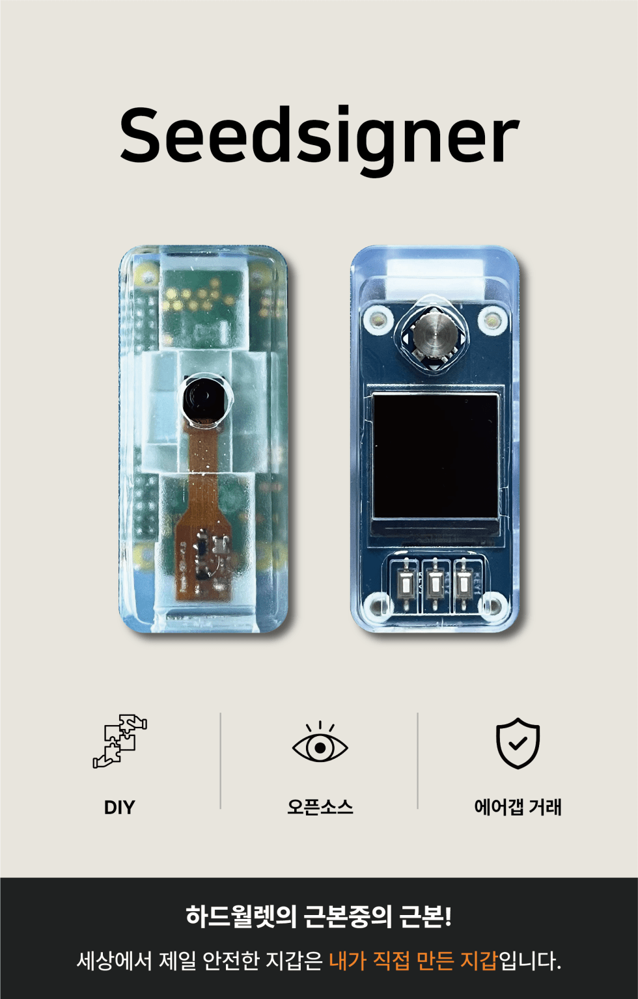 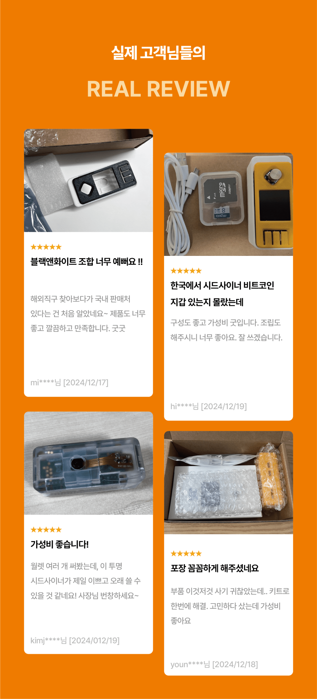 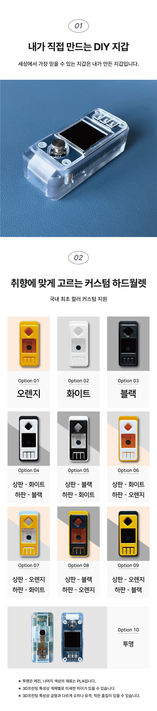 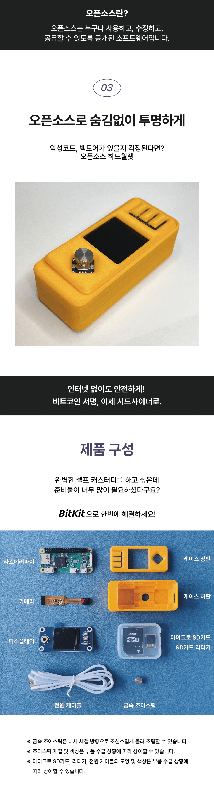 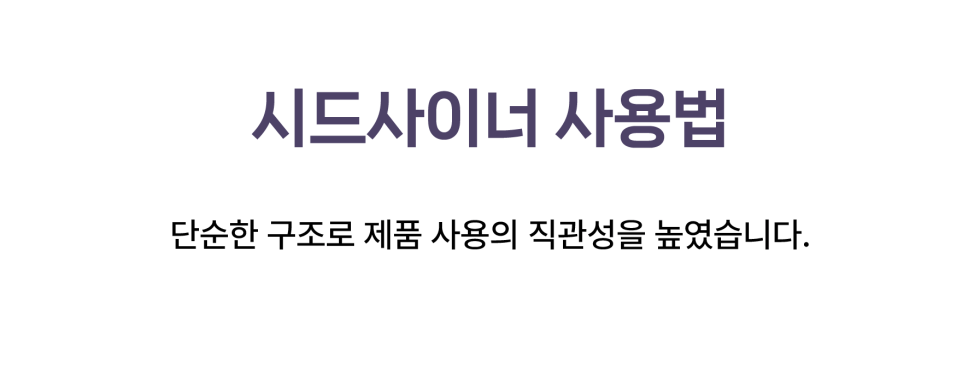 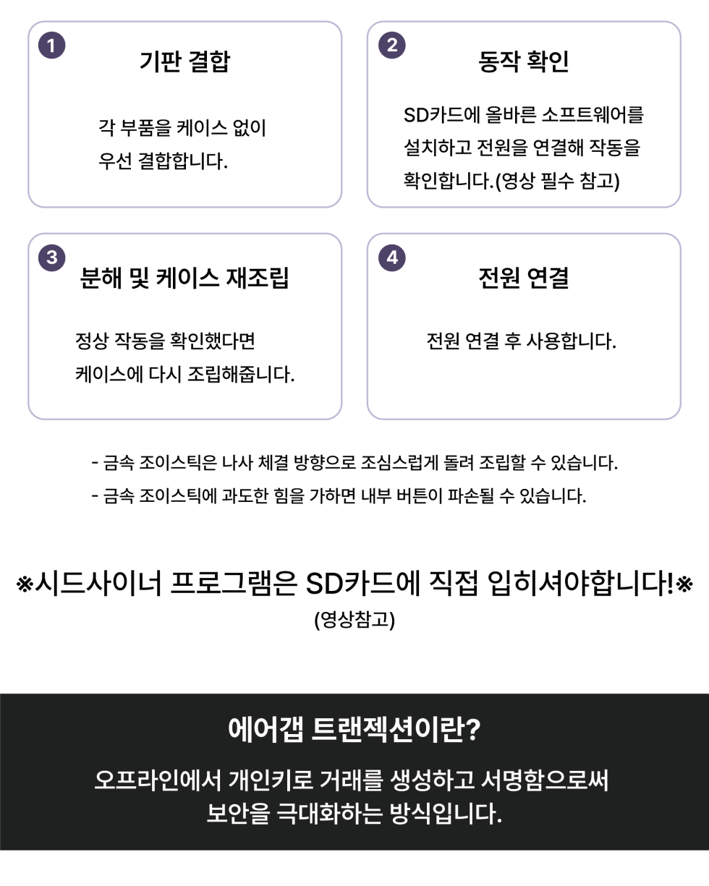 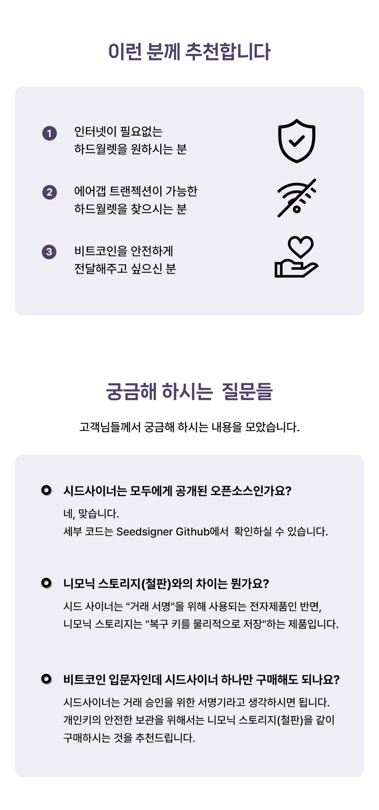 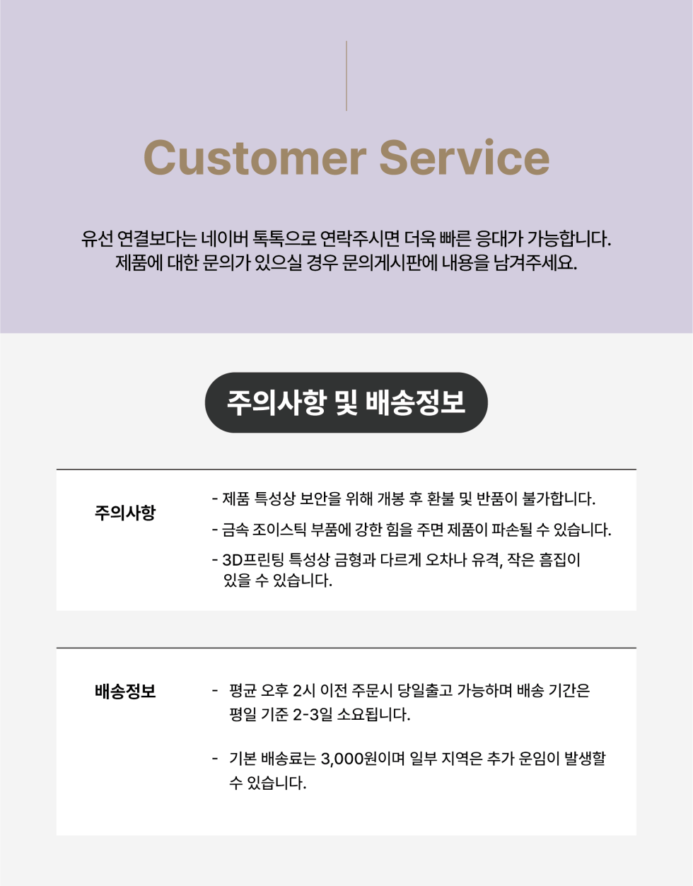
TINSB 니모닉 티타늄 플레이트(스탠다드팩) (링커 : 틴스비)
제품명 : TINSB 니모닉 티타늄 플레이트(스탠다드팩)
배송 등 문의사항 카톡링크(틴스비 고객센터) : https://open.kakao.com/o/s4hFO55g
■ 배송안내
• 평일 오후 10시까지 주문 완료에 한하여 다음날 발송되며 발송 후 1~2일 내 수령하실 수 있습니다. 주문일이 토요일 또는 일요일인 경우 다음주 월요일에 발송됩니다.
■ 스탠다드팩 제품구성
• 티타늄 니모닉 플레이트 : 1개
• 일본제 오토센터펀치 : 1개
• 박스 및 QR(메뉴얼, Word List) : 1개
• 임시 니모닉 카드 : 1장
■ TINSB 니모닉 플레이트 사양
• 소재 : Titanium
• 기록용량 : Plate당 최대 24단어
• 사이즈 : 38 × 36 × 3 ㎜(가로 × 세로 × 두께)
• 무게 : 16 g / Plate
• 제조국 / 디자인 : 한국 / 틴스비
■ 오토센터펀치 사양
• 제조사 : 에이신(EISHIN)
• 소재 : SK4 팁, 엘라스토머 그립
• 사이즈 : 135 mm (길이)
• 무게 : 75 g
• 제조국 : 일본
■ 박스 사양
• 방식 : 마그네틱 덮개 박스
• 사이즈 : 20 × 11 × 4 ㎝ (가로 × 세로 × 두께)
• 총무게 : 약 260 g
• 제조국 : 중국
■ TINSB 스탠다드팩 장점
• 티타늄 원소재를 정밀하게 앞뒤로 깎아내어 하나하나 제작되었습니다. (기본적으로 가공 자국이 남아 있습니다.)
• 예기치 못한 사고나 극한 환경에서도 나의 니모닉을 안전하게 보관할 수 있습니다.
• 티타늄 소재는 가벼우면서도 높은 강도와 1668℃의 높은 녹는점을 자랑하며, 뛰어난 내구성과 우수한 내식성을 갖춘 특성을 지니고 있습니다.
• 펀치 유도홀이 있어 펀칭 실수를 크게 감소시켰습니다.
• 일본제 오토센터펀치는 반복 사용에도 긴 수명을 자랑하며, 엘라스토머 수지로 만든 그립은 편안한 손잡이감과 함께 손에 전달되는 충격을 효과적으로 줄여줍니다.
■ User Manual
당분간 사토시 마켓에 기부금 받기를 중단합니다.
그간 기부해주신 많은 분들 모두 감사드립니다!
당분간 사토시 마켓에 기부금 받기를 중단합니다.
그간 기부해주신 많은 분들 모두 감사드립니다!
구입하실 때 기재한 메일로 14일간 전자책 다운로드 링크가 제공됩니다.
다운로드 링크가 만료된 이후엔 재구매가 필요하니 주의하세요.
링크가 오지 않을 때는 우선 스팸함을 확인해 주세요.
비트코인은 차세대 글로벌 금융 네트워크입니다. 국가의 검열과 은행의 통제를 뛰어넘는 국경 사이를 자유롭게 넘나들 수 있는 글로벌 금융입니다. 전 세계를 단일 통화로 묶어 누구나 쉽게 원하는 곳으로 빠르게 보낼 수 있는 금융 네트워크입니다. 법정 화폐 시대에는 변동성 큰 투기 자산으로 인식되고 있지만 다음 세대에는 건전 화폐로 추앙받을 차세대 금융 네트워크입니다.
비트코인은 진화의 결과입니다. 비트코인은 수학적으로, 암호학적으로 매우 훌륭한 발명품입니다. 비트코인은 인간의 욕망을 절묘하게 활용한 게임 이론의 적용 사례이기도 합니다. 사토시 나카모토가 발명하여 세상에 내놓았으나 여러 번의 우연이 겹쳐지면서 더 이상 그 누구도 통제할 수 없는 탈중앙화 네트워크로 진화하였습니다.
비트코인은 금융 혁명입니다. 비트코인을 자신의 지갑에 스스로 보유하며 관리할 수 있는 사람은 자산의 주권을 확보할 수 있습니다. 국가가 돈으로 지정한 것을 맹목적으로 따르는 것이 아니라 개개인이 스스로 돈으로 가치를 부여하여 교환의 수단으로 가치 저장의 수단으로 사용할 수 있도록 지원하는 도구입니다.
그러나 비트코인을 바라보는 일반적인 시선은 긍정적이지 않습니다. 비트코인을 도박으로 규정하는 관료, 내재 가치 없는 ‘디지털 쪼가리’로 이해하는 제도권 투자자, 비트코인을 거래소에 넣고 ‘사고 팔고’를 반복하며 ‘인생 한방’을 노리는 트레이더, 이들이 바라보는 비트코인은 비트코인의 일부분에 불과합니다.
비트코인은 아직 어렵습니다. 비트코인을 한 번 이해한 사람은 다시 이전으로 돌아갈 수 없습니다. 그러나 이해할 때까지 넘어야 하는 산이 많습니다. 비트코인은 혁신적이고 놀라운 매커니즘을 가지고 있습니다. 그렇기에 이것을 이해하려면 공부가 필요합니다. 그래서 비트코인에 관심은 있지만 어디서부터 알아가야 할지 어려운 사람을 위해 쉽게 이해할 수 있도록 FAQ 형식으로 내용을 편집하였습니다.
‘궁금해요? 비트코인!’은 ChatGPT-4를 사용하였습니다. 비트코인을 쉽게 이해하기 위해 해결해야 하는 궁금증을 질문과 키워드 중심으로 정리하고, 이것을 ChatGPT-4에게 질문하여 나오는 내용을 정리하여 책을 편집하였습니다. ChatGPT-4는 수많은 비트코이너들의 창작물을 기반으로 학습하였을 것입니다. 저는 그것을 질문의 형식으로 물어 본 것밖에 없고 답변의 내용을 편집한 것밖에 없습니다. 그래서 저를 ‘편집자’로 기재하였습니다.
책을 구입하지 않아도 목차의 내용을 ChatGPT-4에게 질문하면 유사한 답변을 얻을 수 있을 것입니다. ChatGPT-4를 사용할 수 있는 분들은 목차만 복사하여 붙여넣어 확인해도 됩니다. 이 책을 읽는 것과 ChatGPT-4를 직접 사용하여 읽는 것에 큰 차이는 없습니다.
그동안 비트코이너들의 수많은 정리와 논의, 그리고 논쟁이 없었다면, 그 이야기를 그들이 웹에 발행하지 않았다면 이 책은 나올 수 없었을 것입니다. 이 책 또한 다음 세대가 비트코인을 배우고 익히는 데 도움을 줄 수 있는 ‘데이터’의 역할이 되길 소망합니다.
비트코인은 가장 우월한 돈입니다. 위대한 발명품, 신비로운 진화의 결과물, 다음 세대를 위한 돈인 비트코인을 배우는 여정을 시작해 보세요. 분명히 의미 있는 여행이 될 것입니다.
[목차]
라이트닝 네트워크
₿ 라이트닝 네트워크란 무엇인가요?
₿ 라이트닝 네트워크는 비트코인과 어떻게 다른가요?
₿ 라이트닝 네트워크는 어떻게 작동하나요?
₿ 라이트닝으로 비트코인을 주고 받으려면 반드시 노드를 만들고 채널을 개설해야 하나요?
₿ 라이트닝 네트워크를 국경을 넘어가는 결제에 사용할 수 있나요?
₿ 라이트닝 네트워크로 결제를 하려면 어떤 준비가 필요한가요?
₿ 라이트닝 지원 지갑은 어떤 것이 있나요?
₿ 라이트닝 네트워크 사용의 단점은 무엇인가요?
₿ 라이트닝 네트워크는 수수료가 없나요?
₿ 라이트닝 네트워크는 안전한가요?
₿ 라이트닝 네트워크의 활용량은 증가하고 있나요?
지갑이 제대로 동작하는지 테스트 해보고 $2.99 상당의 멋진 선물도 받아가세요
여러분의 라이트닝 지갑이 제대로 동작하는지 테스트 해 보세요(1~4 사토시 정도의 수수료가 부과될 수 있습니다).
⚡️스트라이크 지갑 다운로드 하기: 클릭하세요 (새창)
⚡️월렛오브사토시 다운로드하기: 클릭하세요 (새창)
$2.99 상당의 멋진 선물 이미지들을 다운로드할 수 있는 링크가 결제 시 기입한 이메일 주소로 발송됩니다.
메일이 보이지 않는다면 스팸 메일함을 확인해 주세요!
(proton등 일부 메일 서비스는 시스템에서 스팸 메일로 인식하고 구매하신 서비스가 배달되지 않는 경우도 있습니다)
일분 비트코인님 스트라이크 지갑 사용법 설명 동영상: 동영상 보러가기 (새창)
Preservation Notes
이 결과물은 HTML, CSS, 이미지 파일만으로 동작합니다. Cloudflare Pages, GitHub Pages, Netlify 같은 무료 정적 호스팅에 올리면 서버, 데이터베이스, WooCommerce 업데이트 없이 보존할 수 있습니다.